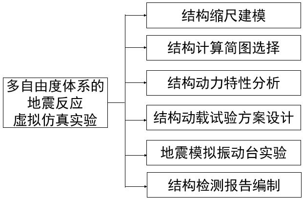
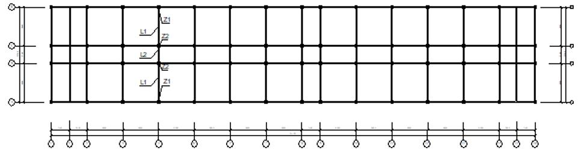
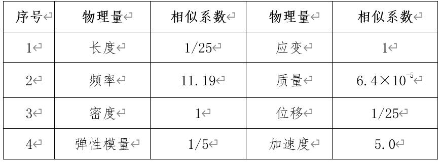
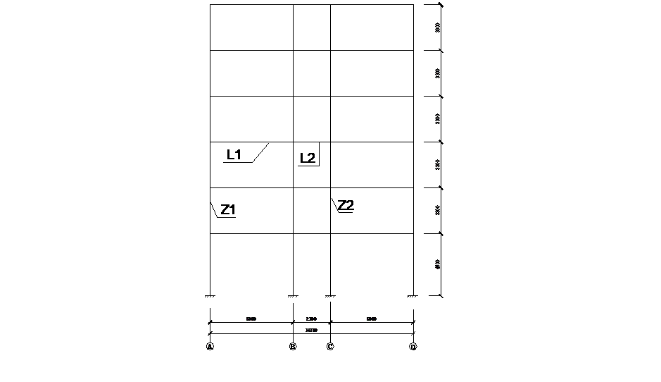
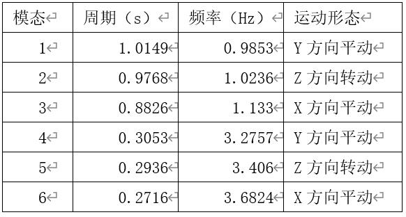
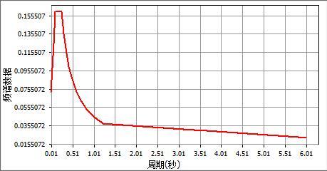

该虚拟仿真实验以地震模拟振动台实验为核心，研究多层多自由度体系的自振频率、振型、阻尼等参数，在多遇7，8，9度地震作用下结构的地震反应、破坏现象。为达到预期实验目的，结合结构所在场地性质，拟选用三类地震波作为振动台台面输入波形：
第I类：根据地震危险性分析得到的人工地震波，分为多遇地震三组。这种波形通过GSRevit建模设计提取人工地震波。
第II类：天然地震记录，从PEER（太平洋工程地震研究中心，http://peer.berkeley.edu/peer_ground_motion_database）下载的地震波数据，进行强震记录分析。
第III类：拟合规范反应谱的人工地震波。
该实验在地震模拟振动台实验模块之前，设计了结构缩尺建模、结构计算简图选择、结构动力特性分析、结构动载试验方案设计、结构检测报告编制等模块，以上5个模块和地震模拟振动台实验模块共6个模块构成“多自由度体系的地震反应虚拟仿真实验”（如图3-1）。通过实验，使学生不仅加深对结构特性、计算计算简图、结构缩尺建模、结构动力分析的方法，和地震波的认识、了解反应谱的拟合绘制方法，进一步掌握地震作用的计算，熟悉振动台结构和地震模拟振动台实验过程，可以提高学生的抗震设计能力。

图3-1 实验设计框架
具体设计思路为：
a.结构缩尺建模（1学时）
在设计结构动力模型时，完全满足模型与原型的相似关系十分困难，该试验主要研究地震动下结构的性能，着重考虑抗侧力构件相似关系，使墙、柱、梁、板构件及其节点满足尺寸、配筋（等强度代换）等相似关系（见图3-2），用设置配重的方法满足质量和活载相似关系；具体相似系数见表3-1。

图3-2 框架结构体系结构平面图
表3-1 模型相似系数

b.结构计算简图选择如图3-3所示。

图3-3 框架结构体系结构计算简图
c.结构动力特性分析（1课时）
经过GS的计算得到固有周期、固有频率、振型参与质量等的数值结果见表2-2。
表3-2 结构的自阵周期、频率、运动形态

d.结构动载试验方案设计（0.5学时）
试验用地震波根据原型场地条件、原型结构的动力特性选用EL-CENTRO地震记录、PASADENA地震记录和根据地震危险性分析得到的人工地震波作为模拟地震振动台试验的输入波。应变测点布置共选择10个，分别布置在各楼层柱和梁上，加速度测点共10个。
e.地震模拟振动台试验（0.5学时）
①多自由度体系建模设计模块，提供第I类地震波。
②强震记录分析模块，提供第II类地震波。
③反应谱分析模块，提供第III类地震波，加速度反应谱计算结构的地震作用（见图3-4），拟合标准反应谱曲线。

图3-4 加速度反应谱
④地震模拟振动台实验操作模块，将模块1的人工地震波、模块2的天然地震记录、模块3拟合的规范反应谱的人工地震波作为振动台台面输入程序进行实验。
f.结构检测报告编制（1学时）
在上面5个模块的基础上，进行数据采集和数据处理，将理论和实验数据进行比对，编制结构检测报告。
知识点：共 5 个
1. 缩尺建模
2．结构动力特性分析
3. 结构动载试验方案设计
4. 地震模拟振动台试验
5. 结构检测报告编制